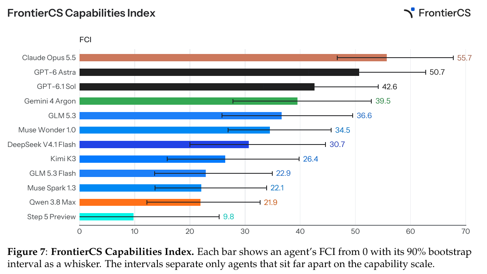
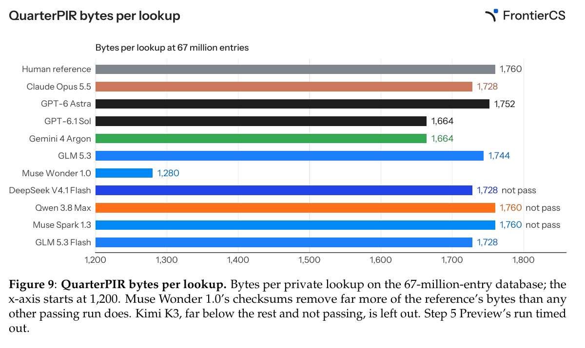
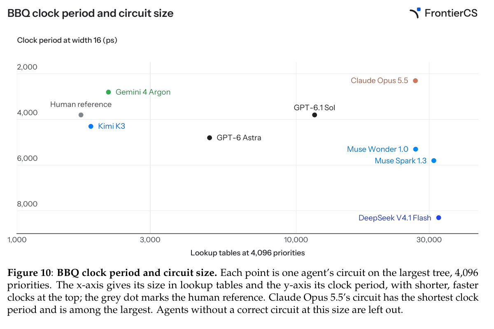
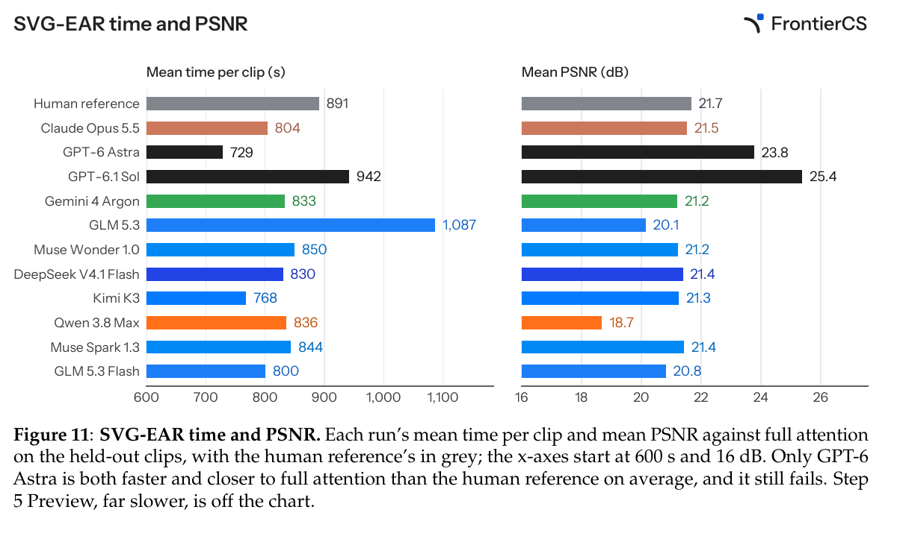

初代：优化一个开放问题
初代论文研究最优解未知、但程序质量能客观评价的题目，包括算法和研究任务。它测量持续改进解的能力，而不只是答案是否正确。
把一篇论文的核心实现拿走，AI 能否在同一个仓库里做得比原作者更好？FrontierCS 2 用真实代码、开发反馈和隐藏评测，把这个问题变成可检验的任务。
设计：把已发表系统中的一个贡献挖空，原作者代码留作私有参照。
判定：开发反馈帮助试错；只有选定的最终补丁接受隐藏评测，而且所有指标、所有工作负载都要达标。
结果：领先智能体通过率为 58%；分数、通过和机制创新仍是三个不同问题。
范围：以 FrontierCS 2 论文 v1 为主；初代论文与 v1.1 官网只用于版本对照，不混合评分或排名。
初代论文研究最优解未知、但程序质量能客观评价的题目，包括算法和研究任务。它测量持续改进解的能力，而不只是答案是否正确。
输入变成删掉关键贡献的研究仓库，输出变成受编辑范围限制的补丁。原作者的实现是参照；开发集帮助迭代，隐藏工作负载检验泛化。
版本提醒：初代论文摘要报告 156 个问题；当前初代 v1.1 官网报告 179 个算法问题，并改变了评分规则。三者不是同一数据集快照。
从真实系统出发
“开放”指没有给定唯一最佳实现，不代表没有可执行的判定。作者把研究贡献限定为一个可编辑组件，保留依赖、调用关系和接口，再用原实现建立可运行的参照。
删除的是误差感知注意力类及其三个例程：对簇求平均、选择需要精算的簇对、精算这些簇对并估计其余部分。智能体只能编辑原贡献所在文件。这要求它理解已有系统里的计算与误差，而不只是补齐一个语法空缺。
出处：§3、图 3；Structured LWE 例外见脚注。
选择领域查看全部任务名。数字是任务数，不是领域权重或通过率；同一篇论文也可能产生多个任务。
H100；开发评测最多 25 次；智能体实验预算 15 GPU·小时；隐藏最终评测超时上限 210 分钟。
L4；开发评测最多 6 次；智能体实验预算 1.5 GPU·小时；隐藏最终评测超时上限 90 分钟。
不使用 GPU；开发评测最多 8 次；智能体容器 4 核 / 8 GiB；隐藏最终评测超时上限 30 分钟。
这些是资源上限，不是实际消耗或 API 成本。智能体实验 GPU 与裁判计量 GPU 分离。Continuum 的最终评测超时上限甚至为 1,800 分钟，因此不能把“五小时”解释成所有最终评测也必须在五小时内结束。
选择步骤，查看信息如何流动。图为教学流程示意，依据论文 §3–4 与代码仓库 README；不是模型训练流程。
保留接口的代码仓库
只编辑允许的文件
通过驱动调用模型与申请实验 GPU
评测器、原作者参照、隐藏最终套件
裁判专用 GPU（GPU 任务）
原始标准输出 / 错误输出不回传
开发时：返回得分与各指标达标工作负载数；不返回参考分数或评测器原始输出。
最终时：仅评测智能体指定的一个补丁；开发集最高分版本不会自动成为最终版本。
信息边界：智能体拿到仓库；评测器、隐藏最终集与参考补丁由裁判持有。开发集得分不能代替最终结果。Structured LWE 是原创密码分析挑战，是“从论文代码中删除贡献”构造法的例外。
智能体沙箱只能连接驱动，模型调用也经由它转发，因此不能直接联网下载被删除的作者实现。GPU 任务的本地实验和正式计量使用不同 GPU；一些任务另有测试沙箱，例如 Continuum 在修补后的 vLLM 上运行 SWE-bench 回合。
讲解者分析：这些边界限制了可直接取得的答案与评测细节，但不等于证明模型从未在训练中见过有关论文。隐藏工作负载检验的是给定任务范围内的泛化。
通过要求：最终补丁在每个隐藏工作负载上满足每项指标的阈值。比如 SVG-EAR：延迟 ≤ 参考的 0.96 倍，PSNR 在 0.25 dB 容差内，SSIM 在 0.01 内，LPIPS 在 0.005 内。阈值由任务定义，并不都要求严格数值提升。
告诉智能体下一次怎么改，不进入最终结果。
每题自行定义的 0–100 分；可能综合速度、质量或效用。
最终补丁的全部指标在全部隐藏工作负载上同时达标。
比参照分数高，不保证通过；通过，也不要求最终分数更高。两者不是一个排序标准。论文的“平均分数”图实际上展示平均分数边距：每次运行的最终分数减去同任务参照分数，再取平均；零表示打平。
教学演示：仅含两个虚构视频的延迟比与 PSNR 差值；不运行 SVG-EAR，不计算论文总分，也不构成完整通过判定。视频 A 固定为 0.90×、−0.10 dB；调整视频 B。
把两个视频的指标先平均，会遮住较差的视频。真实通过判定使用全部指标与全部隐藏工作负载的交集。
各任务的评分函数不同。§4 以 KV Compaction 的问答正确率、加速及缓存大小折扣，和 Progent 的受攻击效用与未被攻破比例为例。把这些数值平均，只能得到这个基准定义下的统计量；不能读成跨领域的统一物理收益。
论文 v1 快照，非实时榜单。每个被报告的智能体在每个任务上运行一次；结果包含模型及其运行框架的共同影响。
Claude Opus 5.5 / Claude Code 的运行通过率为报告中最高。它不是“解决了 58% 的计算机科学问题”。
有 16 个任务没有被任何被报告的智能体通过。单次运行设置不能估计每个任务上稳定的成功概率。
比较对象包括工具调用、补丁选择和运行设置；不能把差异全部归因于模型权重。
每个模型只搭配一个运行框架（harness），每个任务运行一次：12 × 48 = 576 次被报告的运行。另有 Kimi K2.7 的 48 次运行只用于 FCI 零点拟合，总计 624 次。Gemini 的两次提供商拒绝也记作失败。
通过率保留图 2 的整数百分数；FCI 保留图 7 的一位小数；平均边距逐项对应图 6。此处条形由这些标注值生成，没有重建单次运行散点，也没有从图形像素猜测置信区间。
Gemini 的通过率为 40%，高于 GPT-6.1 Sol 的 35%；FCI 却是 39.5，低于后者的 42.6。Muse Wonder 1.0 的平均边距 +4.1 高于 GLM 5.3 的 +1.8，但通过率是 21% 对 25%。这些差异说明判定角度不同，不支持把三个指标混写成一个“总能力排名”。
| 模型 | 框架 / 版本 | 通过率 | FCI | 平均边距 | 推理力度 | 输出令牌上限 |
|---|---|---|---|---|---|---|
| Claude Opus 5.5 | Claude Code 2.1.296 | 58% | 55.7 | +9.4 | max | 未能确认 |
| GPT-6 Astra | Codex CLI 0.162.1 | 44% | 50.7 | +7.1 | xhigh | 未设置（提供商默认） |
| GPT-6.1 Sol | Codex CLI 0.162.1 | 35% | 42.6 | +5.7 | xhigh | 未设置（提供商默认） |
| Gemini 4 Argon | Pi 1.2.0 | 40% | 39.5 | +2.1 | high | 上下文剩余空间 |
| GLM 5.3 | ZCode 0.16.9 | 25% | 36.6 | +1.8 | max | 262,144 |
| Muse Wonder 1.0 | Muse Code 1.4.2 | 21% | 34.5 | +4.1 | max | 128,000 |
| DeepSeek V4.1 Flash | DeepSeek Harness 0.2.0-rc.2 | 15% | 30.7 | +0.5 | max | 262,144 |
| Kimi K3 | Kimi Code 0.31.0 | 21% | 26.4 | -1.2 | high | 131,072 |
| GLM 5.3 Flash | ZCode 0.16.9 | 12% | 22.9 | -8.4 | max | 262,144 |
| Muse Spark 1.3 | Muse Code 1.4.2 | 12% | 22.1 | -3.3 | high | 128,000 |
| Qwen 3.8 Max | Qwen Code 0.25.0 | 12% | 21.9 | -6.4 | high | 未设置（提供商默认） |
| Step 5 Preview | Step Code 0.1.0 | 8% | 9.8 | -10.6 | high | 64,000 |
空白设置不补猜。表中力度与上限是运行框架的请求值；部分框架会按剩余上下文缩小上限，Muse Code 的辅助监测调用也使用不同力度。Kimi K2.7 / Kimi Code 0.31.0 以 medium、最多 131,072 输出令牌参与零点拟合，不列入这 12 个结果。
相近智能体的 90% 区间有明显重叠。单次运行设计与按任务重采样，不能把一两点差异解释成稳定优越；原图仅支持相隔较远的能力差异。

看补丁机制，也看未计入的代价
以下先保留简明结论，再沿着“原方案 → 补丁机制 → 观测证据 → 不能推出什么”深入。均为论文报告与作者补丁分析，不是本页重新运行实验。
GPT-6 Astra 在每段视频上都更快，平均质量也更接近全注意力，却在两个视频的质量条件上失败。这个案例直接解释了逐工作负载判定的必要性。
Claude Opus 5.5 把计数器放入寄存器，获得更快的电路，但最大测试规模上使用了更多查找表。该任务总分奖励速度，不计电路大小；通过也不等于所有设计目标都更优。
Muse Wonder 1.0 用两个校验和代替回复中的多组奇偶校验值。客户端知道可能有差异的两组，因此可恢复需要的值；任务的隐私约束保持不变。作者通过阅读补丁发现这个机制，说明通过标记和总分都不能完整表达研究贡献。
私有信息检索让客户端读取数据库条目，又不让服务器知道读了哪条。回复包含每组的奇偶校验值；客户端只需要其中一组，但直接索取那组会泄露上一次查询的位置。
Muse Wonder 1.0 借用 RAID-6 的双故障恢复构造。客户端已知道仅有哪两组可能与服务器不同，因此两份校验和足以恢复所需值；服务器所见仍受原请求公共函数的任务约束。
1,760 → 1,280 bytes
在 6,700 万条目的数据库上，每次查找减少 480 字节；27.3% 是由原图标注值计算的降幅。该运行通过，但 GPT-6.1 Sol 在节省远少的情况下总分略高。通过率不衡量改进幅度，综合分数也可能弱化这个机制。

保留片上存储器和原内存布局，在计数器读取尚未返回时，提前处理相邻操作对同一计数器的更新检查，缩短关键路径。
每层计数器在一个周期更新，开发规模上不再等待读取；最大测试树上却使用最多的通过方案查找表，也不能覆盖 BBQ 原设计支持的更大树。
只有 Gemini 4 Argon、Claude Opus 5.5 和 GPT-6.1 Sol 通过。其他智能体也尝试寄存器化，却在最大树上更慢，因此“用了寄存器”本身不是充分解释。图 10 比较的是 4,096 个优先级、width 16 下的电路；不从点坐标估计精确时钟值。

一部分注意力块精确计算，其余由簇中心近似。在固定预算内，优先计算预计误差最大的块。
每隔若干去噪步，抽取真实查询做精确注意力，在多个预算下重建输出，选择误差低于上限的最小预算；同时修正簇中心估计的偏差。
891 s → 729 s · 21.7 dB → 23.8 dB
这是参照与 GPT-6 Astra 在隐藏视频上的平均耗时和相对全注意力的平均 PSNR（图 11 标注值）。平均更快、平均质量更好，仍无法抵消两个视频上的质量条件失败。PSNR 的参照对象“全注意力”也不要与通过判定中的“原作者实现”混为一谈。

通过率把难题和易题同等计数。FCI 联合使用“哪些指标组达标”和“总分距人类参考有多远”，拟合智能体强度与任务难度。始终同时通过或失败的指标合为一组，避免重复计权。
同一运行的好坏会同时影响各指标与总分，所以模型使用共享随机效应 u，而不是把这些证据当作完全独立的额外成功。FCI 是在任务集合上拟合的相对尺度，不是直接测量的“智商”，也不是该模型所有未来研究任务的成功率。
θ 是智能体强度，β 是指标组难度，u 是本次运行的共同效应。下面只改变 z；这是条件概率教学计算，不能预测完整任务通过率。
概率量尺：0% → 100%
在相同运行效应下，FCI 高 10 分，战胜同一指标组的赔率乘以 e ≈ 2.72；不是概率乘以 2.72。Kimi K2.7 是零点锚，参与拟合但不在报告榜单中。
赔率 = p / (1 − p)。教学例子：单组条件概率从 50% 对应的赔率 1，乘 e 后约为 2.72，对应概率约 73.1%，而不是 136%。这仍不是完整任务的预测。
FDI 是完整任务通过概率达到 50% 时的能力水平。它结合所有指标组，并积分掉运行效应；不能把上面的单组 p 直接当作任务通过率。人类参考没有 FCI。
s 是最终分数，参考分数取该任务各次运行内参考得分的中位数；dₜ 按附录 D 的规则计算任务分数标准差，c 是跨任务尺度下限（本次拟合为 5.78 分）。hₜ 是期望边距为零的强度。
通过的运行及低于参考的失败运行使用观测边距；失败但高于参考的运行仅贡献 y ≥ 0 的信息；恰好平分不贡献边距项。FCI 的 90% 区间来自 500 次按任务重采样，在固定超参数下重拟合；任务 FDI 的区间另按附录 D 步骤 11 计算。
论文的整体判断：任务难度的跨度比这些智能体的能力跨度更大；在拟合尺度上，中位任务的 FDI 约位于最强智能体的 FCI 附近。这说明任务集尚未被轻易覆盖，但单题 FDI 不确定性很大，不宜据点估计逐题排名。
先在同一个运行效应 u 下要求所有指标组成功（乘积），再对可能的运行效应积分。FDI 寻找让完整任务通过概率达到一半的强度。它通常不能用某一个指标组的 β 代替。论文对单题 FDI 的不确定性持谨慎态度，不按其点估计给任务排严格名次。
任务标准差 dₜ 优先用严格介于 0 与 100 之间的最终分数计算；不足三个时用全部分数。尺度下限 c 取各任务 dₜ 的中位数，为 5.78。先验令从未被通过的指标组仍有有限难度，而不是无穷大。
拟合用 64 节点 Gauss–Hermite 积分，联合优化 13 个强度与 163 个任务参数（115 个组难度 + 48 个打平水平）。五个超参数通过近似边际似然拟合；这里不重新运行拟合。
区间来源不同：FCI 用 500 次按任务有放回重采样，固定超参数；FDI 用 2,000 次加权 Laplace 参数抽样，固定智能体强度；预算曲线的 FCI 区间用 100 次任务重采样。三者不应统称为同一种置信区间算法。
图 5 的横轴是平均每次运行成本，图 8 是给每次运行设置成本上限，两者都使用美元对数轴；它们不是同一张图，也不是 GPU 训练时间曲线。论文没有在正文图旁列出精确成本表，本页不从散点位置编造金额。
保留这次运行的真实隐藏最终结果。
视作没有最终提交：所有指标组失败，分数为零，然后在固定任务参数下重拟合强度。
小预算下 DeepSeek V4.1 Flash 领先，但其成本是下界，依赖令牌计价；大预算下 Claude Opus 5.5 领先。开发分数会因正确性或质量失败跌到零又恢复，所以这套规则没有使用“当时最高开发分数”。它也不能回答换一个更短时限重新运行智能体会怎样。
论文的成本截断规则：预算内已结束的运行保留最终结果，仍在运行的视为没有最终提交、计零分。它不是在每个预算点重测“当时最好的补丁”。
通过支持在给定代码、阈值和工作负载下的改善，不保证任意规模、硬件或真实部署都更好。电路面积等未纳入的代价需要另行报告。
作者保留了超过 100 个待公布的私有任务。这里的结果只对应已报告的 48 个公开任务，不能外推成私有集表现。
讲解者分析：最有用的阅读单位是“补丁机制 → 逐项证据 → 未计入的代价”，而不是孤立的排名。对科研智能体，选择可靠的最终版本本身也是研究能力的一部分。
不是。它把问题约束在已有仓库中的指定组件；贡献可能是新机制，也可能是工程优化。创新性还需要读补丁与相关文献。
它是这 48 个任务、这组框架与预算下的运行比例。每个智能体—任务只有一次运行，不能估计该配对重复运行时的稳定性。
不能这样推断。它限制直接调参到未见工作负载，但论文可能已公开；网络隔离和私有参照不等于训练数据未包含相关材料。
讲解者分析：保留可执行人类参照、隔离开发与最终评测、报告逐指标结果、要求智能体自己选择最终版本，并把未计分的成本并列呈现。
本次逐页复核以用户提供的 arXiv:2610.29932v1 PDF（31 页）为准。实验数字、图号、表号与设置均对应这个版本；官网动态榜单仅作后续查询入口。原图裁切保留原始标签与图注，教学演示另行标识。